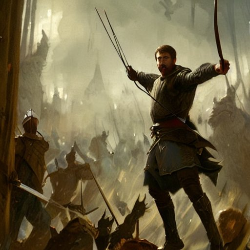

Você escolheu intervir a briga

Não durou muito tempo até que você interrompesse o duelo.
Porém, o público, armado com pedras e lanças te obrigam a escolher um para matar, caso contrário, você morrerra.